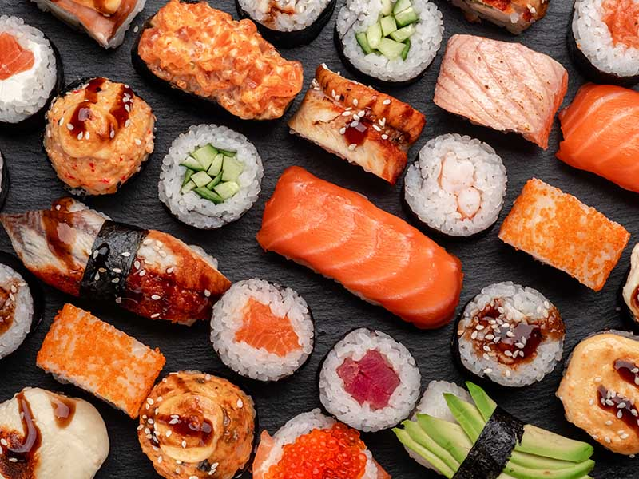

Sushi recipe:

Description:
This recipe is of sushi, a very popular japanese dish, that has since also been Americanised.
Sushi is not only tasty but also healthy.
Sushi makes use of very fresh fish that can be eaten raw.
This fish type is known as sushi grade.
Ingredients:
- Steamed Rice
- Raw Salmon
- Seaweed Paper
- Soy Sauce (for the side dip)
Steps:
- Place the seaweed paper flat
- Place Rice on it and flaten that too
- Place the raw Salmon on it
- Roll the giant sushi roll
- Cut into small bite-size pieces